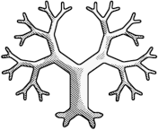

Research Interests
My name is Mathieu Guillame-Bert, and I am working in Google Zurich, Switzerland.
I did my Postdoctoral at CMU (Carnegie Mellon University) in the Auton-Lab (part of Robotic Institute) under the
supervision of Artur Dubrawski. I
studied the use of rule extraction and decision
forest-like techniques for symbolic and numerical time series. Typical
applications include Automated and/or assisted Medical Diagnostics, Medical Forecasting,
Human Activity Recognition and Forecasting, Banking Activity Patterns, Fault Detection
and Prediction on complex systems, automatic Foreign exchange market trading, and a bit of Robotics.
I defended my PhD in France in 2012 at the INRIA Research Lab in the PRIMA team under the supervision of James L. Crowley. I studied
the automated extraction of patterns from large temporal datasets, as well as the use of those models for
automated prediction, user interpretation and automated reasoning.
I graduate from the Master of Advance Computing of the Imperial College of London, and from the "French Grande Ecole" ENSIMAG (Ecole Nationale Supérieure
d'Informatique et de Mathématiques Appliquées) in 2009.

Publications
2022
Article
2020
Article
2018
Article
2017
Journals/Conference Proceedings
2016
Journals/Conference Proceedings
Tutorial
Article
2015
Presentation
2014
Workshop
Presentation
2013
Presentation
Tutorial
▪ The TITARL algorithm
Mathieu Guillame-Bert
An interactive tutorial to understand the TITARL algorithm (Data-Mining algorithm on symbolic time sequences).
[read ]
2012
Journals/Conference Proceedings
Report
Presentation
2011
Journals/Conference Proceedings
2010
Journals/Conference Proceedings
Prior to 2010
Report
▲ Come back to index
Curriculum vitae
▲ Come back to index
Softwares & Datasets
Softwares

A collection of state-of-the-art algorithms for the training, serving and interpretation of Decision Forest
models in TensorFlow's Keras.
Github page,
TensorFlow.org page.
A C++ library containing a collection of state-of-the-art algorithms for the training, serving and
interpretation of Decision Forest models.
Github page.
TITARL (Temporal Interval Tree Association Rule Learner)
is Temporal Data Mining algorithm able to extract temporal patterns and make prediction on symbolic time series
and time sequences datasets. These patterns can then be used to user interpretation or for automatic
forecasting.
Part of the
MGB Framework.
Event Viewer is a powerful visualizing tool for time series, time sequences and other symbol or scalar temporal
datasets. Event Viewer has unique features which allow for a powerful understanding of data. Event Viewer can be
used to study static data and real time data flows. Event Viewer can interact seemingly with Honey
Part of the
MGB Framework.
Honey is a compact and high level flow-oriented programming language designed to facilitate the pre/post
processing and analysis of symbolic and numerical time series and sequences datasets. Honey can seemingly be
applied on static dataset and real time data streams.
Part of the
MGB Framework.
A small exploratory tool designed to test and experiment easily with several Machine Learning algorithms on
several real work and sythetic datasets.
Download Machine
Learning Lab.
Datasets
▲ Come back to index
Gallery
This sections shows some of the nice pictures that I have generated through my research work.
You can click on the picture to get the full size versions.

Cloud of "good" temporal association rules

Virtual robot console during unsupervised exploration

A* search algorithm in 3D
Screen shot of our game called Build & Defend

Chess configurations

Screen-shot of the Even Viewer software (available in the download section)

Example of our ploting library

Example of Recursive Titar plan. The main objective is 'a'.

Forex pre-processing console

High frequency vital signs + pre-processing before learning forecasting model.
You can see more of those pictures at the gallery page.
▲ Come back to index
Personal area
Social
Projects
See the other projects here.
Dust : The Abandoned Land is a multiplayer real-time survival roguelike that takes place
in a large procedurally generated world populated with wildlife, dangerous creatures and other
NPC humans (e.g. other survivors, military, bandits). The game includes some
fun/interesting
artificial intelligence (implemented though dynamic behavior trees).
The
Raspberry Pi Camera Follower is a controller for a
AIY Vision kit
mounted on top of a
Pan Tilt Hat and connected to a Raspberry Pi.
The camera detects human
faces and drive the pan/tilt to follow them [
Video].
Mapgen Explorer is a terrain editor / debugger for the
Cataclysm
DDA game.
Build & Defend is a multi-player survival cooperative game in a randomly generated and
destructible world. The game also include a lot of "social" logics: replay sharing, forum, chat,
achievements, global leaderboard, custom character drawing, etc..
The game started as an experiment with game-play mechanics, and ended-up being a paying game.
You can try this game at
here.
The core of a robot made of LEGOs
from when I was a kid.
This website contains many of previous projects, mostly video game development and DIYs.
I am the co-creator of the website
http://nac-sitter.com/.
Nac-sitter.com helps people to find somebody to keep their pets during holidays.
This web-site focus mainly on NACs ("Nouveaux animaux de compagnie" - "New pets" in english) such
as rats, hamsters, rabbits, fishs, pogonas, etc.
▲ Come back to index

{kind=link}
{kind=link}
{kind=link}
{kind=link}


{kind=link}
{kind=link}